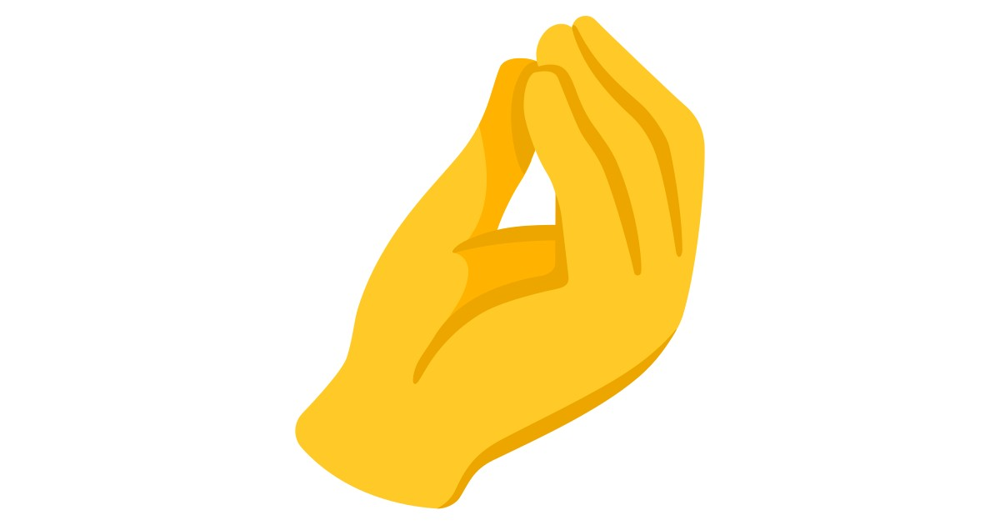

Witaj!
Mam na imię Alan i jestem studentem Politechniki Poznańskiej. Poświęcam swój czas nie tylko na rozwijanie się naukowo, ale również zawodowo jako Ekspert ds. IT w firmie Fujitsu. Moje zamiłowanie do kuchni włoskiej jest równie silne, co fascynacja światem technologii. Interesuję się Formułą 1, choć pomimo miłości do kuchni włoskiej, nie kibicuję Ferrari. Moje życie to harmonijne połączenie nauki, pracy oraz fascynacji kulinariami i sportem. Przeczytaj więcej o moich ulubionych daniach i ciekawostkach kulinarncyh na mojej stronie!
